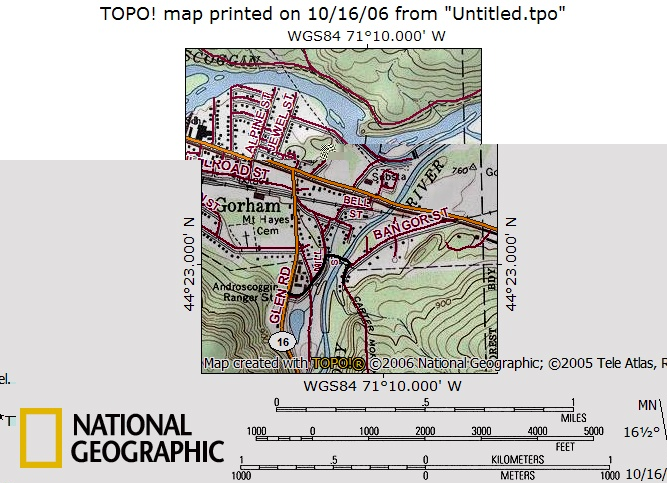

A very nice loop can be made by going up Mt. Moriah by the Stony Brook Trail, off Rt. 16, and descending by the Carter-Moriah Trail to Bangor Road in Gorham. With two cars that is a very easy car spot. For the hiker with one car it is much less attractive, as the driving route goes through Gorham, then about half a mile east along Rt. 2, before turning west for another half mile on Bangor Road.
Fortunately there is a short cut which, by my estimate, cuts almost a mile off that route. From the Bangor Road trailhead go northeast for a short distance (three or four houses, as I recall) and you will find a pedestrian path that goes west to a suspension bridge over the Peabody River. After crossing the river go southwest along Mill Road which swings west for a short distance before reaching Rt. 16 just north of a sign which reads "Libby Memorial Reacreation Area" or something very similar. From there it is about 1½ miles to the Stony Brook trailhead.
In the opposite direction, walk north along Rt. 16 for about 1½ miles to the "Libby Memorial Reacreation Area" sign and take the road east for a short distance until it swings northeast. Follow it until you see the suspension bridge to the east, cross the bridge and go south on Bangor Road for a short distance to your car.
The map below, with the shortcut shown in black, should make this clear.
Shortcut between Rt. 16 and Carter-Moriah trailhead on Bangor Road
